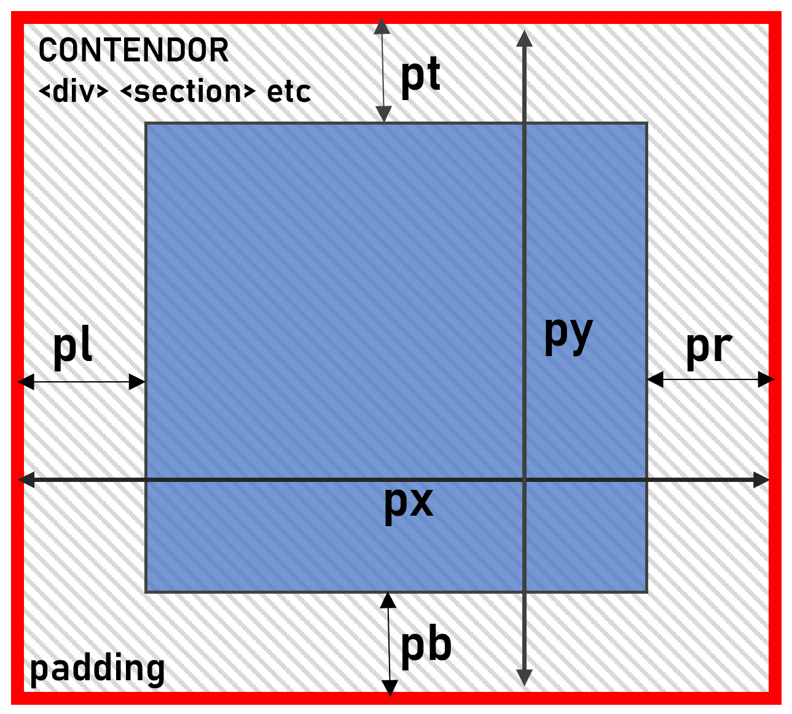
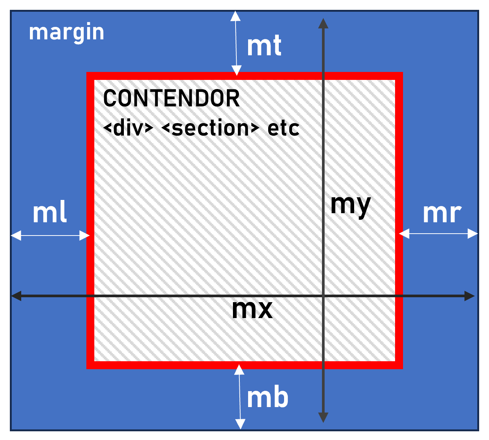

1. Instalación de TailWind
En el <head> agregar la siguiente linea:<script src="https://cdn.jsdelivr.net/npm/@tailwindcss/browser@4"></script>
Esta linea de codigo hará que Tailwind funcione correctamente sin necesidad de instalar todos los archivos, sin embargo este metodo solo es recomendable para desarrollo y no para mandar a produccion.
2. Padding y Margin
Padding: Margen interior del contenedor.

- Padding en los 4 lados:
p-num - Padding horizontal:
px-num - Padding vertical:
py-num - Padding superior:
pt-num - Padding inferior:
pb-num
Margin: Margen exterior del contenedor.

- Padding en los 4 lados:
m-num - Padding horizontal:
mx-num - Padding vertical:
my-num - Padding superior:
mt-num - Padding inferior:
mb-num
Reemplazar num por un número entero, cuanto mayor sea en número, mayor será el espesor del padding o margin.